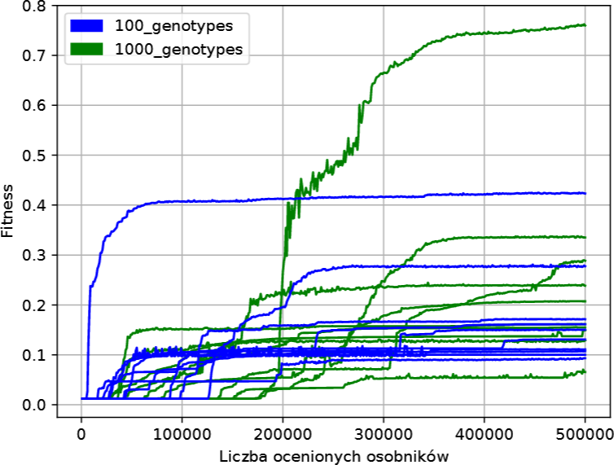
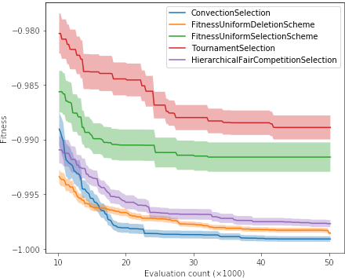
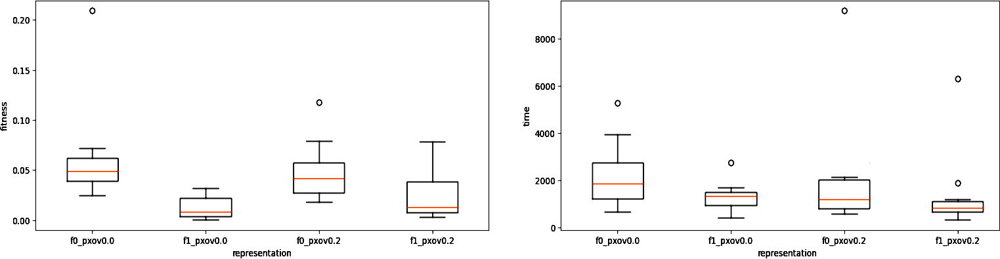

For further experiments and analyzes in all laboratory classes, we will need three types of graphs:
1. Showing each run of evolution (the best individual in a given generation) as one line; the same colors should be used for all lines with identical parameter values (i.e. in our case with the same mutation intensity). Such a graph should look similar to:

2. Aggregated version of the above chart, where from the above lines of a given color we calculate the mean and standard deviation. The deviation (which can be divided by some constant for readability so that the areas do not overlap) should be shown translucently, for example like this:

3. The most aggregated version, i.e. box plots comparing quality of solutions (only Hall of Fame individuals, one per evolutionary run) and duration of runs for different parameterizations, for example:

You can freely modify the FramsticksEvolution.py source so that it is convenient for you to pass information both ways, save logs and results to files, etc. – the source serves as an example and a starting point. If you want to access the mutation intensity parameter directly from the python source, once you add import frams, this parameter is called frams.GenMan.f9_mut (this is an object, its method _value() will convert it to a float).
We are now ready to run the final experiments and test whether your original predictions about the effect of mutation intensity on evolutionary dynamics were correct. The computation is single-threaded, so if you have more cores available, you can easily parallelize it.
Earlier – for quick testing – we have set the -popsize and -generations parameters to small values. Now set -popsize to at least 50, and set-generations and -tournament to values that ensure convergence or only a minimal chance of improvement (since we did not prepare any more advanced charts, for this assessment use the first type of chart discussed at the beginning of this question.)
Optionally: you can modify DEAP to support a new "stagnation period" parameter and to stop evolution by itself if, for a given number of generations (e.g. 50), there is no improvement of an individual in the Hall of Fame. Such a mechanism will also be useful in subsequent laboratories, because it frees us from setting a priori a fixed number of generations.
It is important not to stop evolution when improvements to the solutions still occur, because then we could draw false conclusions. Therefore, choose the stopping criterion properly.
In response to this question provide the parameter values used, attach the obtained graphs (name the files according to their content), interpret them and mention whether your initial assumptions turned out to be correct. What exactly caused the evolution to provide worse results for certain mutation intensities? What does this teach us about the desired way to create a "neighbor solution" from the "current solution" in optimization? Do the values of the mutation intensity that have lost in the current competition still have any advantages, and can you imagine situations in which these values would be the most advantageous?